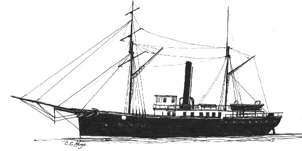

Albert Gallatin
The Albert Gallatin was a 142 foot long, Iron
hulled, United States Revenue Cutter. She was lost January 6, 1892, in
collision with Boo Hoo Ledge off Manchester, Massachusetts.

Click on image to go back to Albert Gallatin page.